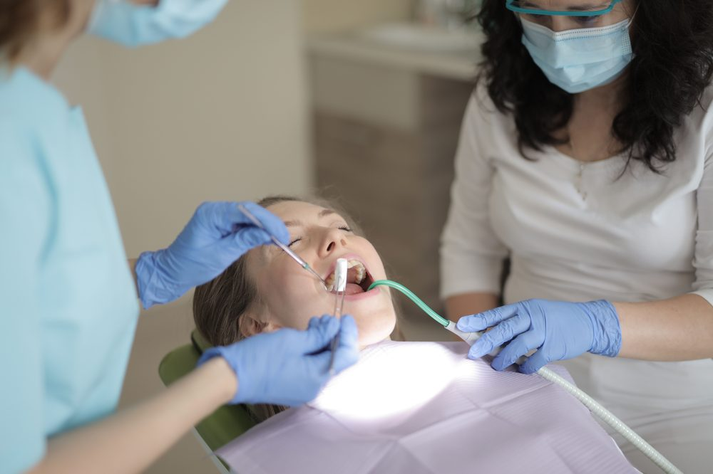

Стоматологическое лечение в Турции
Зубные импланты, виниры, ортодонтия и полное восстановление зубов в Стамбуле — прозрачные цены, пожизненная гарантия на импланты.
Готовы начать? Поговорите со специалистом уже сегодня.
Связаться с нами
От зубных имплантов до полного восстановления зубов, виниров и ортодонтии — Турция стала одним из ведущих направлений Европы для доступной и качественной стоматологической помощи. Прайс-лист ниже отражает цены одной из известных стоматологических клиник Стамбула, с которыми мы работаем; индивидуальная стоимость вашего полного плана лечения подтверждается после консультации.
Прайс-лист
По состоянию на июль 2026 г., действителен до 31 декабря 2026 г. Индивидуальная стоимость вашего полного плана лечения предоставляется после консультации.
Диагностика полости рта
| 3D-томография зубов | €53 |
| Осмотр зубов и панорамный рентген | €77 |
Челюстно-лицевая хирургия
| Имплант (Straumann) | €850 |
| Имплант (Megagen) | €550 |
| All-on-Four (Megagen), одна челюсть | €11.000 |
| All-on-Four (Straumann), одна челюсть | €11.000 |
| Аутогенная костная пластика | €1.107 |
| Синус-лифтинг (открытый, включая стоимость биоматериала) | €1.020 |
| Синус-лифтинг (закрытый) | €343 |
| Энуклеация кисты (крупной) | €674 |
| Резекция верхушки корня | €279 |
| Удаление зуба | €92 |
| Удаление зуба с осложнением | €119 |
| Хирургическое удаление зуба | €166 |
| Удаление ретинированного зуба | €192 |
| Удаление ретинированного зуба (с сохранением кости) | €289 |
Пародонтология
| Свободный десневой трансплантат | €302 |
| Лоскутная операция, половина челюсти | €520 |
| Гингивэктомия (один зуб) | €77 |
| Поддесневой кюретаж (половина челюсти) | €249 |
| Чистка зубов и панорамный рентген | €149 |
| Гингивопластика (один зуб) | €74 |
Протезирование
| Лазерное отбеливание (обе челюсти) | €420 |
| Ботокс жевательных мышц | €336 |
| Ночная каппа | €573 |
| Фарфоровый винир (керамический винир) | €663 |
| Вкладка/накладка CEREC | €345 |
| Коронка CEREC | €551 |
| Циркониевая коронка | €551 |
| Монолитная циркониевая коронка | €345 |
| Металлокерамическая коронка | €345 |
| Временная коронка | €49 |
| Немедленный временный протез | €587 |
| Частичный съёмный протез (металлический, одна челюсть) | €1.209 |
| Полный съёмный протез (металлический, одна челюсть) | €1.210 |
| Полный съёмный протез (акриловый, одна челюсть) | €1.101 |
| Съёмный протез на имплантах (без учёта стоимости замковых креплений) | €1.178 |
| Замковое крепление (за штуку) | €192 |
| Прямой композитный винир | €214 |
Эндодонтия
| Восстановление корневого канала фиброволоконным штифтом | €192 |
| Лечение корневых каналов, один канал | €129 |
| Лечение корневых каналов, два канала | €200 |
| Лечение корневых каналов, три канала | €287 |
| Композитная пломба, одна поверхность | €80 |
| Композитная пломба, две поверхности | €100 |
| Композитная пломба, три поверхности | €126 |
Ортодонтия
| Металлические брекеты | €2.961 |
| Керамические брекеты | €3.329 |
| Прозрачные элайнеры | €5.500 |
| Лингвальная ортодонтия, одна челюсть | €3.000 |
| Лингвальная ортодонтия, обе челюсти | €6.000 |
Детская стоматология
| Герметизация фиссур (один зуб) | €48 |
| Местная аппликация фтора (половина челюсти) | €26 |
| Пульпотомия (без пломбы) | €81 |
| Несъёмный сохранитель места | €185 |
| Съёмный сохранитель места | €214 |
| Удаление молочных зубов | €57 |
| Стандартная готовая коронка | €127 |
| Детская циркониевая коронка | €285 |
Полезно знать
- Гарантия на имплантыНа импланты предоставляется пожизненная гарантия производителя. При необходимости замены импланта взимается только стоимость процедуры.
- Продолжительность пребыванияРекомендуемая продолжительность пребывания после установки имплантов — одна неделя. Для завершения процесса имплантации может потребоваться второй визит.
- Период заживленияПериод заживления длится от 2 до 3 месяцев в зависимости от зоны лечения.
- Продолжительность пребывания при втором визитеДля второго визита требуется пребывание 1–2 недели в зависимости от количества устанавливаемых протезов.
Почему стоит выбрать Турцию?
- Больницы с международной аккредитацией
- Опытные узкопрофильные хирурги и медицинские команды
- Значительная экономия по сравнению с Великобританией, ЕС и США
- Прямые рейсы из большинства крупных городов Европы и Ближнего Востока
Зачем работать с независимым консультантом?
В отличие от клиники, продвигающей собственные услуги, Artun Healthcare Consultancy работает независимо и в ваших интересах. Под руководством Tahsin Güney — с 35-летним опытом в сфере медицинского страхования и частных больниц Турции, включая руководящие должности в Турецком учреждении социального обеспечения (SGK) и Acıbadem Healthcare Group — мы подбираем для вас подходящую больницу и специалиста, а не направляем вас в интересах одной-единственной клиники.
Ваш путь лечения
- 1Бесплатная консультация
- 2Индивидуальный план и расчёт стоимости
- 3Организация поездки
- 4Лечение
- 5Последующее наблюдение
Часто задаваемые вопросы
Что входит в прайс-лист?
Указанные выше цены — это стоимость отдельных процедур в одной из наших клиник-партнёров в Стамбуле, действительная до 31 декабря 2026 г. Окончательный план лечения и общая стоимость подтверждаются после изучения вашего случая.
Есть ли гарантия на зубные импланты?
Да — на импланты предоставляется пожизненная гарантия производителя. Если когда-либо потребуется замена, вы оплачиваете только стоимость процедуры, а не сам имплант.
Сколько времени мне нужно оставаться в Турции?
При большинстве видов имплантации рекомендуется пребывание в течение одной недели, а через 2–3 месяца, после завершения заживления, возможен второй визит для установки окончательного протеза.
Могу ли я получить полный план лечения до поездки?
Да. Отправьте нам свои стоматологические данные или фотографии, и вы получите бесплатный индивидуальный план лечения и расчёт стоимости до бронирования поездки.
Получите бесплатный план стоматологического лечения
Расскажите нам о своём случае и получите индивидуальный план лечения и расчёт стоимости от нашей клиники-партнёра в Стамбуле.
Связаться с нами